Eight stills rendered by the actual video engine at 1080×1920. Every sung word is a physical object in the scene, entering when it's sung, and the line builds toward its hero word. No captions, no people: the words are the whole picture.
Each frame now carries its whole line inside the scene.
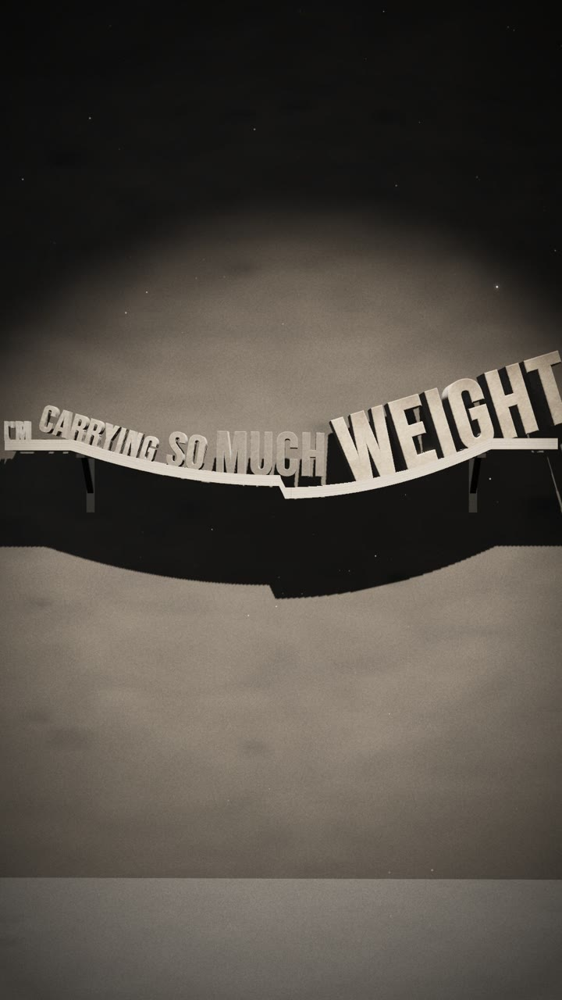
I'M, CARRYING, SO, MUCH land on a wall shelf as they're sung, each bigger and denser: plaster, pale stone, stone, dark stone. WEIGHT drops in last; the plank bows for exactly the held note, snaps when the note ends, the small words tip off, and WEIGHT slams into the concrete on the 0:34.4 kick and cracks it.
Grey oak shelf on steel brackets, words in rising density, cracked concrete floor
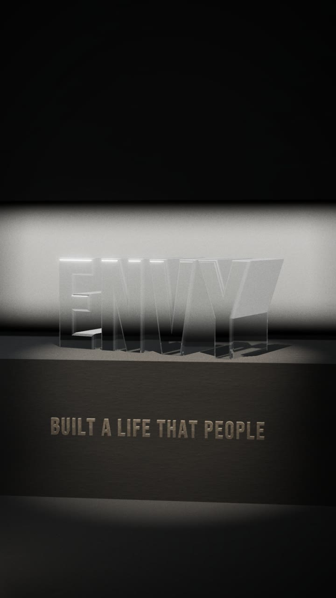
BUILT A LIFE THAT PEOPLE is cut into the plinth, each word as it's sung; ENVY stands on top in thick clear glass, backlit so the edges and refraction carry the shape.
Glass, dark concrete, single softbox
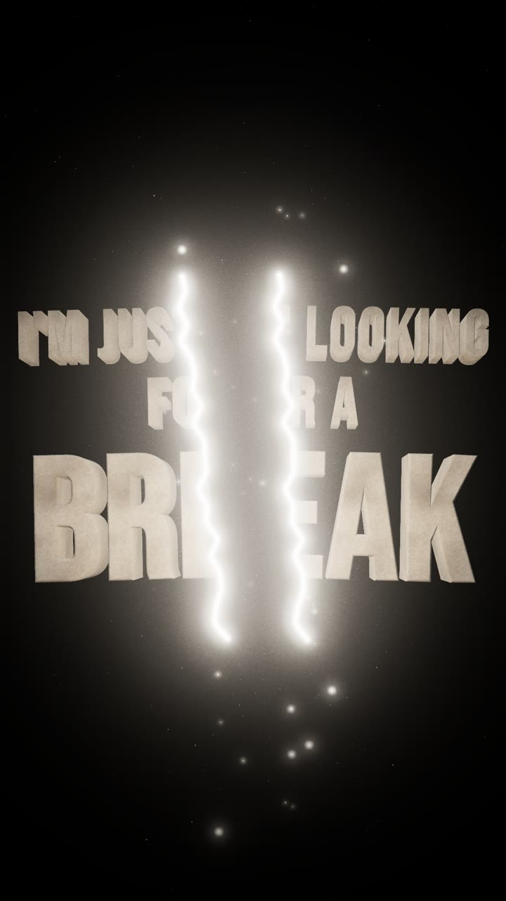
I'M JUST LOOKING / FOR A / BREAK is one stone wall. The crack runs down through the whole line, the halves pull apart with his voice over the held note, and stars show through the gap.
Grey stone, hot point #fff4e6, starfield
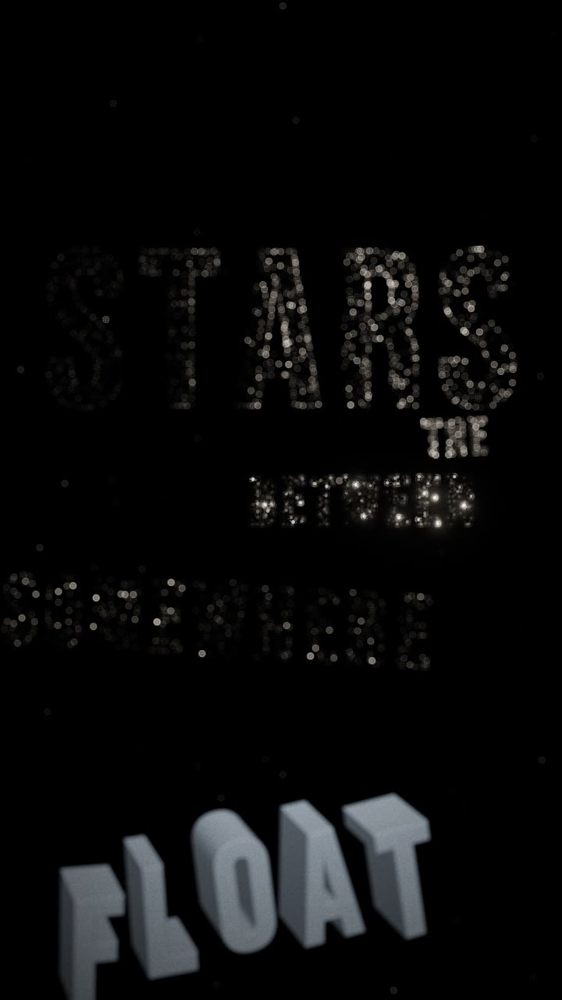
The line reads into the depth of space: FLOAT near the camera, then SOMEWHERE, BETWEEN, THE as fainter constellations, then STARS, 16,000 points igniting left to right as he sings it.
Hot points, drift grey #a9b7c4 matte
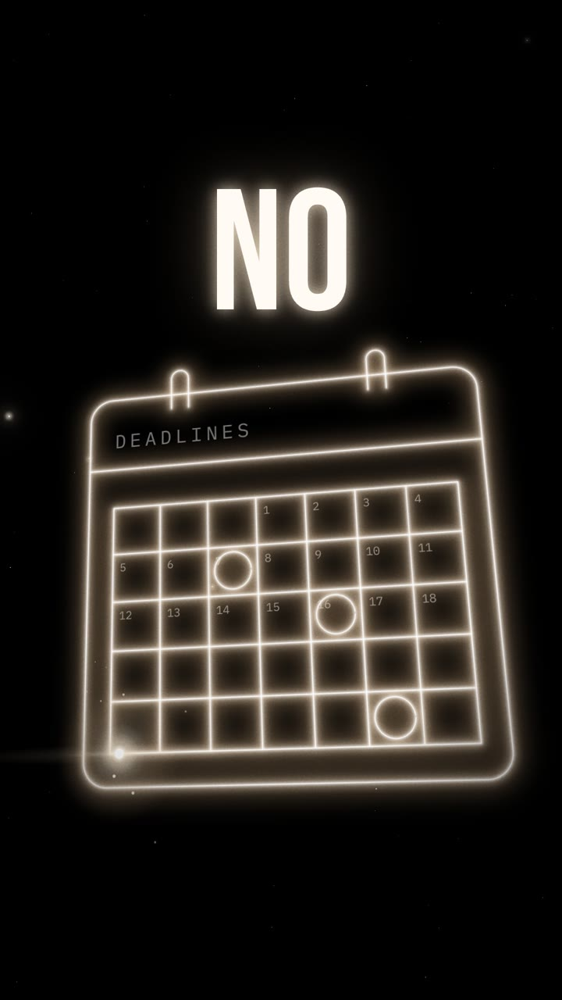
A calendar drawn in light: white-hot core, warm glow, wide bloom. On NO the hot point runs back along its own path and unwrites it, leaving a faint afterimage. Real month grid in Plex Mono.
Hot line #fff4e6, NO in Bebas Neue white-hot
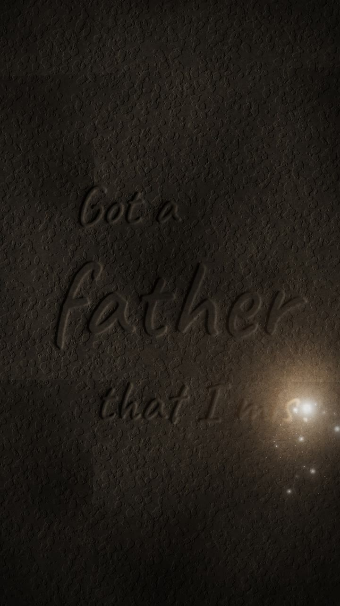
Got a / father / that I miss, handwritten and cut into concrete by the hot point under raking light, in step with his voice. FATHER is the largest. The fresh groove glows and cools; sparks spray. No beat cuts.
Caveat, concrete wall, warm point light
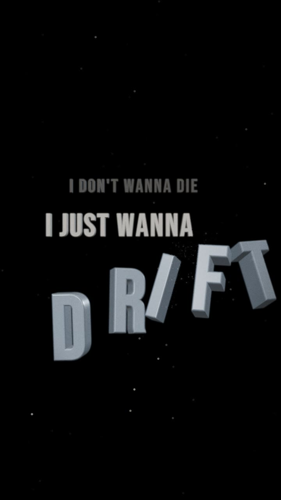
I DON'T WANNA DIE sits small and still above. I JUST WANNA stays on its baseline. DRIFT unhooks and floats apart for exactly the held note; F and T start coming apart into points.
Drift grey #a9b7c4 with clearcoat, cool rim light, starfield
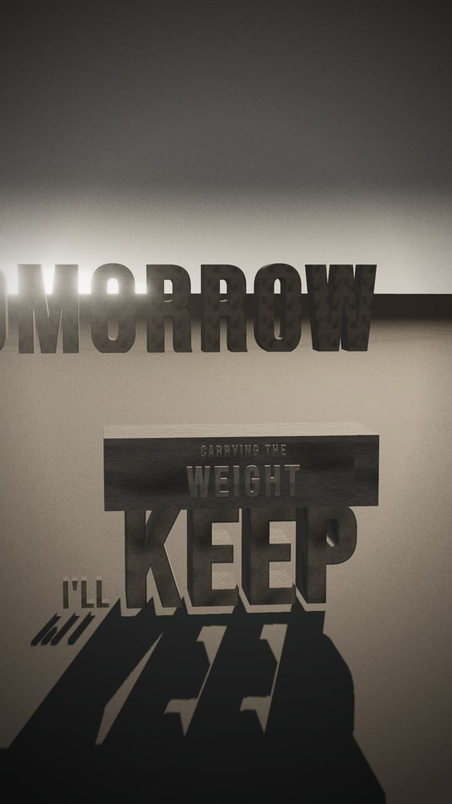
TOMORROW stands on the dawn horizon. I'LL waits at the foot of KEEP, which stands up under the stone block from verse 1; CARRYING THE / WEIGHT is cut into the block.
Stone, horizon glow, ground fog
0:31.8–0:35.3 with the song. The camera starts close on I'M and steps back as each heavier word lands. WEIGHT drops in, the plank bows under the held note, snaps when the note ends, and WEIGHT hits the floor on the kick at 0:34.4.
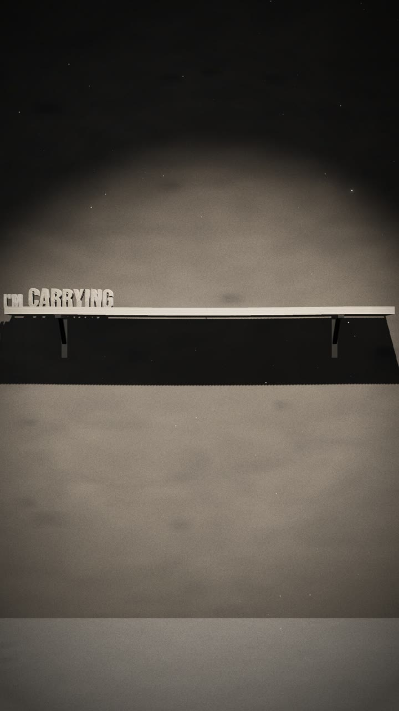
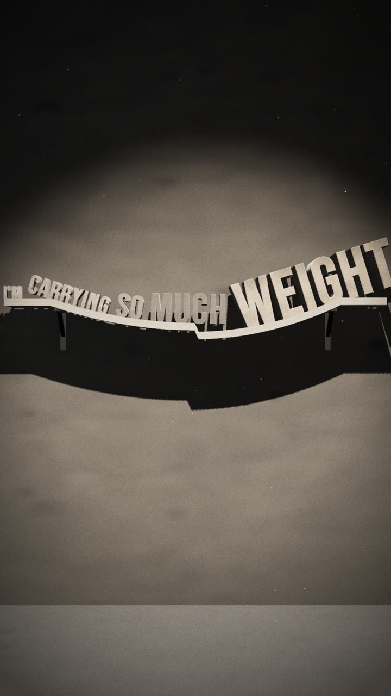
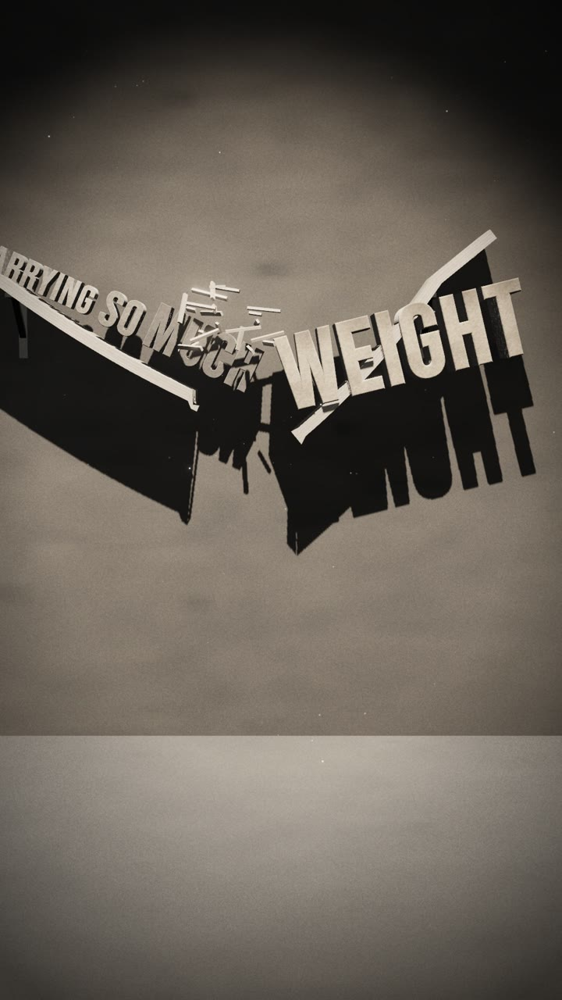
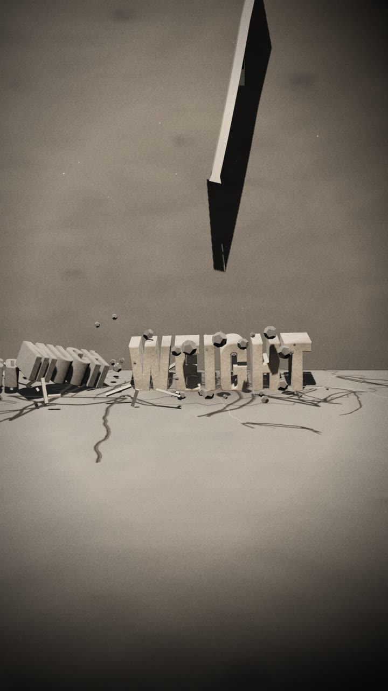
This is the motion standard for the build: heavy things obey gravity and inertia, light things obey air drag and the voice. No generic easing curves on anything that's supposed to have mass.
| Element | Choice | Rule |
|---|---|---|
| Hero type | Bebas Neue, extruded and bevelled | Every hero word is a 3D object made of its material. Tall and condensed, as in Shout It to the Sky. |
| Every word | Inside the scene | Every sung word is an object in the hero's world, entering on its sung time. Supporting words are smaller and build toward the hero; the hero pays off the line. No separate captions. |
| Handwriting | Caveat | Only for FATHER and the personal lines around it. |
| Detail | IBM Plex Mono | Calendar days, timestamps, UI fragments inside icons. |
| Ink | #efede9 | Default for type and lines. |
| Stone | #c4b6a2 | The weight family: weight, pressure, carrying, keep, stronger, father. |
| Hot point | #fff4e6 | The only light source that draws and erases. Core, warm glow, wide bloom, anamorphic streak, sparks. |
| Drift grey | #a9b7c4 | DRIFT and FLOAT only. |
| Red | #e5483b | Money only. No money words in Drift, so it never appears. |
| Materials | Stone · glass · light · matte drift grey · points of light · carved concrete | One material per hero word, chosen by the word. Repeats return in the same material, evolved. |
| Light | One key per scene | Overhead lamp (verses), softbox (glass), raking light (carving), low sun (outro), starlight (choruses). |
| Camera | 35–40 mm feel | Shallow depth of field, slight handheld drift, takes impacts physically. |
| Finish | Filmic tone mapping, bloom on lights only, grain 8–10%, vignette | Highlights roll off like film; nothing clips flat white except the hot point. |
Render cost at this quality is about 2.2 s per frame on this machine, so the full 4:24 song is roughly 5 hours of rendering. Section clips in step 4 take 10–20 minutes each.